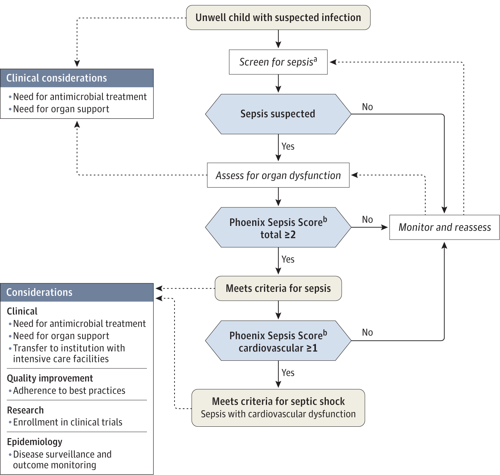
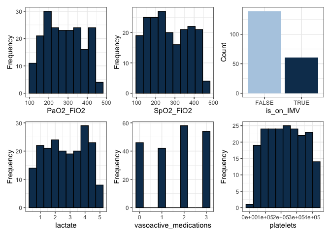
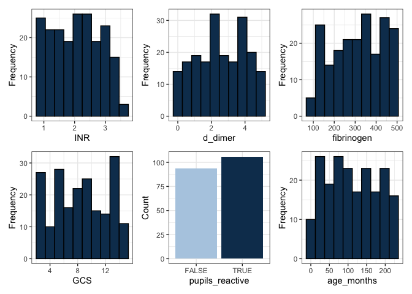
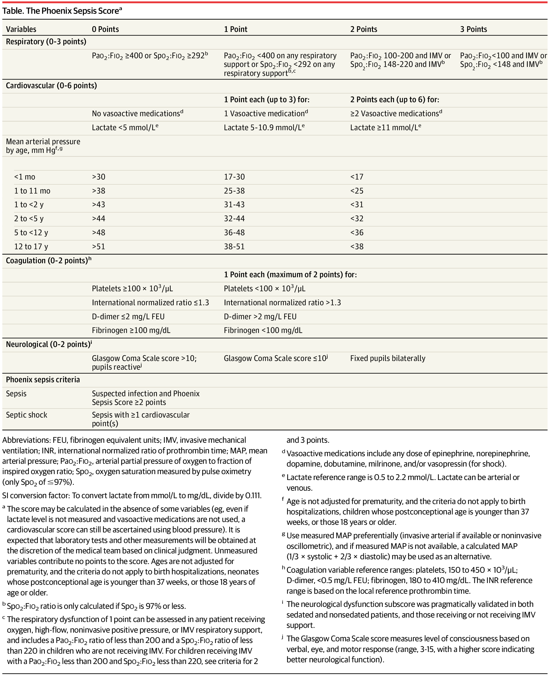

This doc was built with: rmarkdown::render("sepsis_score_logic_phoenix.Rmd", output_file = "../pages/phoenix_sepsis_score_logic.md")
Implementing the Phoenix sepsis score
Abstract
This work deomostrates how to implement the Phoenix Sepsis Score criteria for sepsis and septic shock in children. Pediatric sepsis in children (<18 years) with suspected infection can be identified by at least 2 points in the novel Phoenix Sepsis Score, including dysfunction of the respiratory, cardiovascular, coagulation, and/or neurological systems; and septic shock as sepsis with at least 1 cardiovascular point in the Phoenix Sepsis Score. These criteria for pediatric sepsis and septic shock are globally applicable. The original investigation can be read at: International consensus criteria for pediatric sepsis and septic shock (Schlapbach et al. 2024). The phoenix R package and Python model are available from (DeWitt et al. 2024). The original investigation can be read at: International consensus criteria for pediatric sepsis and septic shock (Schlapbach et al. 2024). The phoenix R package and Python model are available from (DeWitt et al. 2024). The implementations of the Phoenix Sepsis Criteria in R, Python, and SQL are found here https://github.com/cu-dbmi-peds/phoenix/ and here https://pypi.org/project/phoenix-sepsis/, by the original authors (DeWitt et al. 2024). An example implementation of the sofa score (a different score for adult sepsis) is shown in (Bennett, Plecko, and Ukor 2023) Intensive Care Unit Data with R https://github.com/eth-mds/ricu.

Decision tree from (Schlapbach et al. 2024).
History
Sepsis definitions have evolved incrementally. We first breifly summarise these stages before getting to the Phoenix sepsis score definitions.
First Formal Definition (1992) - Sepsis-1 (Carlton et al. 2019)
- Introduced at the American College of Chest Physicians and Society of Critical Care Medicine Consensus Conference. Defined as an excessive inflammatory response to infection, requiring at least two abnormalities (temperature, heart rate, respiratory rate, or white blood cell count).
Second Definition Update (Early 2000s) - Sepsis-2 (Souza et al. 2022)
- This update expanded the signs of an inflammatory response but remained similar to Sepsis-1.
Pediatric-Specific Sepsis Criteria (2005) (Goldstein, Giroir, and Randolph 2005; Souza et al. 2022; Reinhart et al. 2017)
- Developed during the International Pediatric Sepsis Consensus Conference, defining pediatric sepsis as two or more SIRS criteria in the context of infection, adjusting for pediatric physiology.
Third Definition Update (2016) - Sepsis-3 (Levy et al. 2003; Seymour et al. 2016)
- Sepsis redefined as life-threatening acute organ dysfunction due to a dysregulated host response to infection, with SIRS criteria removed. SOFA score of at least 2 points adopted for defining acute organ dysfunction.
Phoenix Sepsis Criteria (2019) (Gebara 2005; Levy et al. 2003; Seymour et al. 2016; Singer et al. 2016)
- Following a data-driven review, pediatric sepsis is redefined as life-threatening organ dysfunction of the respiratory, cardiovascular, coagulation, and neurological systems, as demonstrated by a Phoenix Sepsis Score of at least 2 in the setting of confirmed or suspected infection.
Phoenix sepsis score criteria
This section delineates the scoring system used to evaluate respiratory and cardiovascular functions, mean arterial pressure by age, coagulation, and neurological status in a clinical setting. The scoring criteria are stratified to reflect varying degrees of severity in patient conditions, providing a structured framework for assessing the risk of sepsis:
Definitions
- Respiratory Score: Assesses pulmonary efficiency based on the ratio of arterial oxygen partial pressure (PaO2) to fractional inspired oxygen (FiO2), with adjustments for respiratory support and invasive mechanical ventilation (IMV).
- Cardiovascular Score: Evaluates circulatory system stability by accounting for lactate levels and the usage of vasoactive medications, which are indicative of cardiovascular strain and potential shock.
- Mean Arterial Pressure: Provides age-specific benchmarks for arterial pressure, serving as critical indicators of circulatory health in paediatric to adolescent patients.
- Coagulation Score: Reviews the blood’s ability to clot appropriately, utilising platelet count, International Normalized Ratio (INR), D-dimer levels, and fibrinogen as markers of potential disseminated intravascular coagulation or other coagulopathies.
- Neurological Score: Uses the Glasgow Coma Scale to assess neurological function, crucial for determining the impact of sepsis on the central nervous system.
Scoring logic
Respiratory Score (0-3 points):
- 0 Points: PaO2:FiO2 ≥ 400 or SpO2:FiO2 ≥ 292 (only if SpO2 is 97% or less) [b]
- 1 Point: PaO2:FiO2 < 400 on any respiratory support or SpO2:FiO2 < 292 on any respiratory support [b,c]
- 2 Points: PaO2:FiO2 between 100-200 and IMV or SpO2:FiO2 between 148-220 and IMV [b]
- 3 Points: PaO2:FiO2 < 100 and IMV or SpO2:FiO2 < 148 and IMV [b]
Cardiovascular Score (0-6 points):
- 0 Points: No vasoactive medications and Lactate <= 5 mmol/L [d]
- 1 Point: Each up to 3 points for:
- 1 Vasoactive medication [d]
- Lactate between 5.1-10.9 mmol/L [e]
- 2 Points: Each up to 6 points for:
- ≥2 Vasoactive medications [d]
- Lactate ≥11 mmol/L [e]
Mean Arterial Pressure by age, mm Hg: [f,g]
- < 1 month: >30 (0 points), 17-30 (1 point), <17 (2 points)
- 1 to 11 months: >38 (0 points), 25-38 (1 point), <25 (2 points)
- 1 to <2 years: >43 (0 points), 31-43 (1 point), <31 (2 points)
- 2 to <5 years: >44 (0 points), 32-44 (1 point), <32 (2 points)
- 5 to <12 years: >48 (0 points), 36-48 (1 point), <36 (2 points)
- 12 to 17 years: >51 (0 points), 38-51 (1 point), <38 (2 points)
Coagulation Score (0-2 points): [h]
- 0 Points: Platelets ≥100 x 10^3/μL, INR <=1.3, D-dimer <=2 mg/L FEU, Fibrinogen ≥100 mg/dL
- 1 Point each (maximum 2 points): Platelets <100 x 10^3/μL, INR >1.3, D-dimer >2 mg/L FEU, Fibrinogen <100 mg/dL
Neurological Score (0-2 points):
- 0 Points: Glasgow Coma Scale score >10; pupils reactive
- 1 Point: Glasgow Coma Scale score ≤10 [j]
- 2 Points: Fixed pupils bilaterally
Phoenix Sepsis Criteria:
- Sepsis: Suspected infection and Phoenix Sepsis Score ≥2 points
- Septic Shock: Sepsis with ≥1 cardiovascular points
SI Conversion Factor:
- To convert lactate from mmol/L to mg/dL, divide by 0.111.
Additional Notes:
- [a] The score may be calculated even if some variables are absent (e.g., even if lactate level is not measured and vasoactive medications are not used, a cardiovascular score can still be ascertained using blood pressure). Laboratory tests and other measurements should be obtained at the discretion of the medical team based on clinical judgment. Unmeasured variables contribute no points to the score. Ages are not adjusted for prematurity, and the criteria do not apply to birth hospitalizations, neonates whose postconceptional age is younger than 37 weeks, or those 18 years of age or older.
- [b] SpO2:FIO2 ratio is only calculated if SpO2 is 97% or less.
- [c] Respiratory dysfunction scoring varies based on the type of respiratory support provided and includes specific criteria for PaO2:FIO2 and SpO2:FIO2 ratios.
- [d] Vasoactive medications include any dose of epinephrine, norepinephrine, dopamine, dobutamine, milrinone, and/or vasopressin (for shock).
- [e] Lactate reference range is 0.5 to 2.2 mmol/L. Lactate can be arterial or venous.
- [f] Ages are not adjusted for prematurity, and the criteria do not apply to birth hospitalizations, neonates whose postconceptional age is younger than 37 weeks, or those 18 years of age or older.
- [g] Use measured MAP preferentially (invasive arterial if available or noninvasive oscillometric), and if measured MAP is not available, a calculated MAP (1/3 × systolic + 2/3 × diastolic) may be used as an alternative.
- [h] Coagulation variable reference ranges: platelets, 150 to 450 × 10^3/μL; D-dimer, <0.5 mg/L FEU; fibrinogen, 180 to 410 mg/dL. The INR reference range is based on the local reference prothrombin time.
- [i] The neurological dysfunction subscore was validated in both sedated and nonsedated patients, and those receiving or not receiving IMV support.
- [j] The Glasgow Coma Scale score measures the level of consciousness based on verbal, eye, and motor response (range, 3-15, with a higher score indicating better neurological function).
Define a dataset
This section details the synthetic generation of patient data, simulating a variety of clinical scenarios to test the scoring system. Data points including respiratory and cardiovascular function, coagulation factors, and neurological status are randomly generated within defined clinical ranges, creating a robust dataset for analysis: - The synthetic dataset is crucial for validating the scoring algorithms under controlled conditions, ensuring they are robust across typical clinical variations.
# Subject cohort ----
sample_count <- 200
# Define min-max ranges for each variable
PaO2_FiO2_range <- c(100, 450)
SpO2_FiO2_range <- c(100, 450)
lactate_range <- c(0.5, 5)
platelets_range <- c(20000, 450000)
INR_range <- c(0.8, 3.5)
d_dimer_range <- c(0, 5)
fibrinogen_range <- c(100, 500)
GCS_range <- c(3, 15)
age_months_range <- c(1, 228)
# Generate random data for a given number of subjects
data <- data.frame(
subject_id = 1:sample_count,
PaO2_FiO2 = round(runif(sample_count, PaO2_FiO2_range[1], PaO2_FiO2_range[2]), 2),
SpO2_FiO2 = round(runif(sample_count, SpO2_FiO2_range[1], SpO2_FiO2_range[2]), 2),
is_on_IMV = sample(c(TRUE, FALSE), sample_count, replace = TRUE, prob = c(0.3, 0.7)),
lactate = round(runif(sample_count, lactate_range[1], lactate_range[2]), 2),
vasoactive_medications = sample(0:3, sample_count, replace = TRUE),
platelets = round(runif(sample_count, platelets_range[1], platelets_range[2]), 0),
INR = round(runif(sample_count, INR_range[1], INR_range[2]), 2),
d_dimer = round(runif(sample_count, d_dimer_range[1], d_dimer_range[2]), 2),
fibrinogen = round(runif(sample_count, fibrinogen_range[1], fibrinogen_range[2]), 2),
GCS = sample(GCS_range[1]:GCS_range[2], sample_count, replace = TRUE),
pupils_reactive = sample(c(TRUE, FALSE), sample_count, replace = TRUE),
age_months = sample(age_months_range[1]:age_months_range[2], sample_count, replace = TRUE)
)
print(head(data))
## subject_id PaO2_FiO2 SpO2_FiO2 is_on_IMV lactate
## 1 1 200.65 183.55 TRUE 1.57
## 2 2 375.91 436.83 FALSE 3.59
## 3 3 243.14 310.48 TRUE 1.52
## 4 4 409.06 280.26 FALSE 1.93
## 5 5 429.16 240.90 FALSE 1.28
## 6 6 115.94 408.09 FALSE 4.11
## vasoactive_medications platelets INR d_dimer fibrinogen
## 1 2 137658 3.12 1.17 355.67
## 2 0 275363 3.20 1.15 149.93
## 3 3 88879 2.12 0.31 202.11
## 4 3 386975 2.74 2.49 428.23
## 5 2 384528 2.11 1.22 421.51
## 6 0 225491 3.47 3.79 118.33
## GCS pupils_reactive age_months
## 1 12 FALSE 199
## 2 4 TRUE 26
## 3 15 TRUE 209
## 4 8 TRUE 175
## 5 15 TRUE 37
## 6 14 FALSE 32
Data distribution plots
Visual representations of the dataset are generated to illustrate the distribution of each clinical measurement. These plots are instrumental in identifying trends, outliers, and the overall distribution of data points within the synthetic cohort: - Histograms and bar plots provide insights into the frequency and categorisation of data points, facilitating preliminary assessments of data quality and distribution integrity.

Logic functions for scoring
Defines the functional logic for calculating scores based on the clinical criteria outlined. Each function is tailored to process specific aspects of patient data, converting raw measurements into actionable clinical scores: - These functions are the computational backbone of the scoring system, translating clinical data into standardized scores that reflect patient health status.
Respiratory score calculation:
# Respiratory score calculation
respiratory_score <- function(PaO2_FiO2, SpO2_FiO2, is_on_IMV) {
if (PaO2_FiO2 >= 400 || SpO2_FiO2 >= 292) {
return(0)
} else if ((PaO2_FiO2 < 400 && SpO2_FiO2 < 292) || !is_on_IMV) {
return(1)
} else if ((PaO2_FiO2 >= 100 && PaO2_FiO2 < 200 && is_on_IMV) ||
(SpO2_FiO2 >= 148 && SpO2_FiO2 < 220 && is_on_IMV)) {
return(2)
} else {
return(3)
}
}
Cardiovascular score calculation:
# Cardiovascular score calculation
cardiovascular_score <- function(lactate, vasoactive_medications) {
score <- 0
# Check for 0 points condition explicitly
if (vasoactive_medications == 0 && lactate <= 5) {
return(score) # Return 0 if no medications and low lactate
}
# Points for vasoactive medications
if (vasoactive_medications >= 2) {
score <- score + 6 # Max 6 points for 2 or more medications
} else if (vasoactive_medications == 1) {
score <- score + 2 # 2 points for 1 medication
}
# Points for lactate levels
if (lactate > 11) {
score <- score + 2
} else if (lactate >= 5.1 && lactate <= 10.9) {
score <- score + 1
}
return(score)
}
Coagulation score calculation:
# Coagulation score calculation
coagulation_score <- function(platelets, INR, d_dimer, fibrinogen) {
score <- 0
if (platelets < 100 || INR > 1.3 || d_dimer > 2 || fibrinogen < 100) {
score <- score + 1
}
return(min(score, 2)) # Max of 2 points
}
Neurological score calculation:
# Neurological score calculation
neurological_score <- function(GCS, pupils_reactive) {
if (!pupils_reactive) {
return(2)
} else if (GCS <= 10) {
return(1)
} else {
return(0)
}
}
Decision algorithm for scoring
Integrates individual scores to derive a comprehensive sepsis risk assessment. The algorithm considers the cumulative impact of respiratory, cardiovascular, coagulation, and neurological scores to determine the overall risk of sepsis and septic shock: - This decision-making algorithm is pivotal for applying the scoring system in a clinical context, providing a final determination that supports clinical decision-making.
# Modified evaluate_sepsis to handle a vector from apply
evaluate_sepsis <- function(subject) {
# Calculate scores
res_score <- respiratory_score(subject["PaO2_FiO2"], subject["SpO2_FiO2"], subject["is_on_IMV"])
cardio_score <- cardiovascular_score(subject["lactate"], subject["vasoactive_medications"])
coag_score <- coagulation_score(subject["platelets"], subject["INR"], subject["d_dimer"], subject["fibrinogen"])
neuro_score <- neurological_score(subject["GCS"], subject["pupils_reactive"])
# Total Phoenix Sepsis Score
total_score <- res_score + cardio_score + coag_score + neuro_score
# Assess criteria
result <- if (total_score >= 2) {
if (cardio_score >= 1) {
"Septic shock"
} else {
"Sepsis"
}
} else {
"Monitor and reassess"
}
# Ensure output is always a data frame
return(data.frame(result = result, total_score = total_score))
}
Run evaluation and return result
Applies the decision algorithm across the patient dataset, appending the results to the original data frame. This process culminates in the generation of a final dataset that includes both the raw clinical measurements and the derived sepsis scores, ready for further analysis or review: - The output enriches the dataset with valuable insights into patient health, enabling clinicians and researchers to conduct detailed analyses or refine the scoring criteria based on empirical evidence.
# Running the assessment for each subject
# Check if the 'data' DataFrame exists and is correct
if ("data" %in% ls() && is.data.frame(data)) {
# Running the assessment for each subject and storing results
evaluation_results <- do.call(rbind, apply(data, 1, evaluate_sepsis)) # Apply function row-wise
# Append results to the original data frame
data$result <- evaluation_results$result
data$total_score <- evaluation_results$total_score
data <- data %>% dplyr::select(subject_id, result, total_score, everything())
} else {
print("Data object not found or is not a data frame.")
}
print(head(data))
## subject_id result total_score PaO2_FiO2 SpO2_FiO2
## 1 1 Septic shock 10 200.65 183.55
## 2 2 Sepsis 2 375.91 436.83
## 3 3 Septic shock 7 243.14 310.48
## 4 4 Septic shock 8 409.06 280.26
## 5 5 Septic shock 7 429.16 240.90
## 6 6 Sepsis 3 115.94 408.09
## is_on_IMV lactate vasoactive_medications platelets INR
## 1 TRUE 1.57 2 137658 3.12
## 2 FALSE 3.59 0 275363 3.20
## 3 TRUE 1.52 3 88879 2.12
## 4 FALSE 1.93 3 386975 2.74
## 5 FALSE 1.28 2 384528 2.11
## 6 FALSE 4.11 0 225491 3.47
## d_dimer fibrinogen GCS pupils_reactive age_months
## 1 1.17 355.67 12 FALSE 199
## 2 1.15 149.93 4 TRUE 26
## 3 0.31 202.11 15 TRUE 209
## 4 2.49 428.23 8 TRUE 175
## 5 1.22 421.51 15 TRUE 37
## 6 3.79 118.33 14 FALSE 32
Conclustion
For every patient (subject) the newly calculatied result columns provide the Phoenix score conclusions: result of sepsis, septic shock, or monitor and reassess and total_score of the value 0..n. Audomated classificaion algorithms may be used to provide a precision medicine approach to monitoring and treatment, either locally or as part of national registries.
Abbreviations and definitions
- FEU: Fibrinogen Equivalent Units
- GCS: Glasgow Coma Scale
- IMV: Invasive Mechanical Ventilation
- INR: International Normalized Ratio of Prothrombin Time
- MAP: Mean Arterial Pressure
- PaO2:FIO2: Arterial Partial Pressure of Oxygen to Fraction of Inspired Oxygen Ratio - used to determine the degree of hypoxemia and acute respiratory distress syndrome (ARDS).
- Phoenix Sepsis Criteria: A modern set of guidelines designed to assess sepsis with a focus on paediatric patients, emphasizing organ dysfunction.
- Sepsis-1, Sepsis-2, Sepsis-3: These refer to the evolving definitions of sepsis over time, each marking a significant update in how sepsis is clinically identified and diagnosed based on symptoms and physiological responses.
- SIRS: Systemic inflammatory response syndrome
- SOFA: Sequential Organ Failure Assessment
- SpO2: Oxygen Saturation Measured by Pulse Oximetry (only SpO2 of ≤97%)

Criteria table from (Schlapbach et al. 2024).